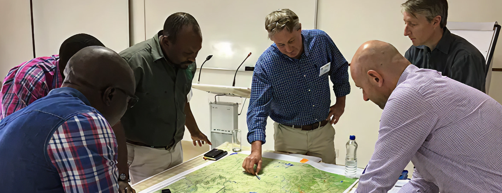

Research at EIPCM
Building Novel Participatory Systems & Applications of ICT for a Better Society

The European Institute for Participatory Media (EIPCM) is a non-profit research organization committed to advancing participatory forms of information and media creation. We support companies, public institutions, and civil society in harnessing the transformative potential of digital participation — acting as an innovation facilitator that bridges rigorous scientific inquiry with the practical needs of industry and user communities.
Our research rests on three foundational principles: trans-disciplinary collaboration, user-centered design, and practice-driven inquiry.
Our Research Approach
Contemporary challenges rarely conform to the boundaries of a single discipline. EIPCM addresses this reality by organizing its work around overarching Research Themes in which complementary Application Areas converge to tackle complex societal problems. Through systematic empirical testing in real-world environments, we work to close the widening gap between academic knowledge production and actionable practical outcomes.
Core Research Themes
1. Participatory Systems
We investigate how the networked co-creation and collaborative management of knowledge, products, and services can be effectively organized within "value webs" — connecting end-users with domain professionals. Our work examines the synergies between participatory platforms and next-generation media systems to enable seamless, device-independent information access.
2. Knowledge Visualization
Enabling meaningful cooperation among stakeholders with divergent goals and perspectives is a defining challenge for modern institutions. We develop technological frameworks for the semantic structuring and visualization of knowledge and communication flows — making different viewpoints legible, actionable, and productive for all parties involved.
3. Human-Centered & Trustworthy AI
A central focus of our current research agenda is the development of Reflective AI. We hold that realizing the benefits of AI while mitigating its risks cannot be achieved through regulatory frameworks alone — it requires equipping people with the conceptual tools to understand and critically assess the consequences of AI design.
- Human-AI Interaction & UX: Designing intuitive, accessible interfaces that enable confident and informed human-AI collaboration.
- Disinformation & Media Literacy: Countering online disinformation by fostering critical thinking and deepening public understanding of AI's role in shaping contemporary information ecosystems.
Key Application Areas
Our research themes are operationalized across several domains to drive social innovation:
- Social Computing: Design and real-world piloting of collective intelligence approaches — including crowdsourcing and human computation — that productively combine human judgment with machine capabilities.
- eDemocracy: Exploration of new models for citizen engagement and civic education, fostering horizontal dialogue between governmental institutions and organized civil society.
- Social Innovation: Analysis of how digital technologies give rise to new forms of social, cultural, and economic interaction — from social enterprises to open-source ecosystems.
- Open Innovation: Research into cooperative business models in which end-users are empowered as active co-creators of value within professional networks.
- Digital Humanities: Application of digital methods and semantic analysis to humanities research, enabling novel patterns of historical knowledge discovery.
- Sustainability & Science Communication: Advancing sustainable practices and evidence-based public communication to address global challenges and the broader societal implications of AI.
Research Projects & Publications
Our scientific contributions are documented through an extensive body of projects and peer-reviewed publications.
- Selected Projects: Reflective AI, SmartH2O (water sustainability), enCOMPASS (energy conservation), and histoGraph (historical social network analysis).
- Publications: EIPCM researchers publish regularly in leading peer-reviewed journals — including Sustainability and Energy Informatics — and contribute to premier international conferences such as CHI, ECIS, and HICSS.